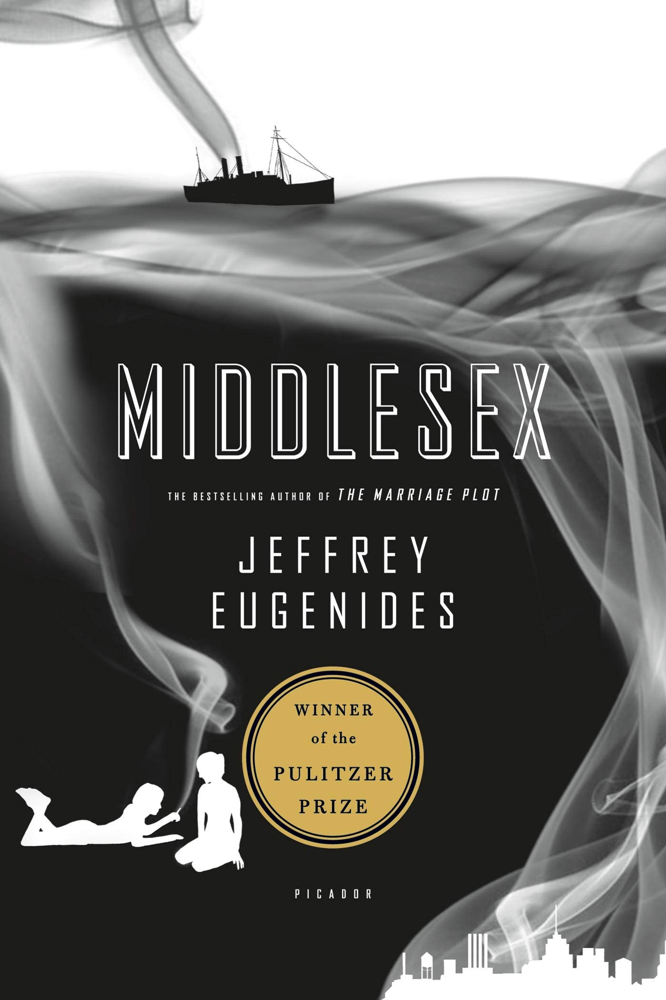

Earlier this year, I went to the Azores, a group of islands far off the coast of Portugal, with my mom and sister. They're volcanic islands, so we got to see some calderas and do some beautiful hikes. The food there was also amazing: we did a cooking class with a local named Maria, and got to try our hand at making pastel de nata (a Portuguese egg custard tart patry which tastes a bit like creme brulee).
My favorite pet names and the animals I would give them to are, in no particular order:
I lived in Boston for 3 years, and my favorite restaurant is still there, in Harvard Square. It's called Alden & Harlow! They serve mostly small plates, but it also has the best pasta dish I've ever had: a basil pasta with a carrot bolognese — which may sound odd, but it tastes great!

My favorite food that I prepare for myself is probably overnight oats. I keep it pretty simple. I use rolled oats, chia seeds, maple syrup, a little bit of greek yogurt, and unsweetened almond milk. I combine all of these in a jar, mix, and then let sit in the fridge overnight. Then in the morning I top with fruits or any other toppings I think of (e.g., cinnamon, chopped nuts, etc.). And viola! Overnight oats.
| Name | Cover | Author | Summary |
|---|---|---|---|
| Middlesex |  | Jeffrey Eugenides | A multi-generational family saga told by the main character Cal, an intersex man describing genetic and cultural factors that came to shape his identity. |
| The Goldfinch | |
Donna Tartt | After surviving a terrorist attack at a museum in which he loses his mother, a boy steals a famous painting. What follows is a coming-of-age story told through the lens of art, loss, and crime. |
| Never Let Me Go | |
Kazuo Ishiguro | A haunting story about students at a British boarding school who slowly uncover the dark truth about their purpose, and come to accept it in different ways. |
| Oblivion | |
David Foster Wallace | A collection of dense, funny short stories that explore modern disconnection and inner lives. It was DFW's third and last short story collection published. |